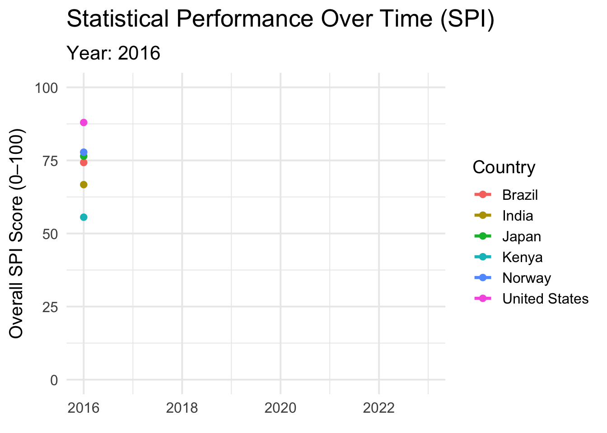

library(tidyverse)
library(gganimate)
library(janitor)
library(scales)
library(ggthemes)
library(here)Tidy Tuesday - 2025.25.11
Purpose
In this assignment, I aim to:
- Explore and clean the Statistical Performance Indicators (SPI) dataset from the World Bank
- Examine how countries’ statistical performance has changed over time
- New skill learned this week: properly creating an animation instead of doing it the worst way possible for good plot bad plot
Libraries
Data
This week’s Tidy Tuesday focuses on the World Bank’s Statistical Performance Indicators (SPI), a comprehensive dataset designed to assess how effectively countries collect, manage, and use data. These indicators span multiple dimensions—including data use, services, products, sources, and infrastructure. It covers nearly all countries from 2016 to 2023. This dataset provides an opportunity to explore global patterns in statistical capacity, compare performance across income groups and regions, and examine how countries’ scores evolve over time. My goal is to visualize changes in statistical performance and highlight broader trends using an animated time-series plot.
tuesdata <- tidytuesdayR::tt_load('2025-11-25')
spi_indicators <- tuesdata$spi_indicatorsData Wrangling
# pick a small set of countries to focus on
focus_countries <- c(
"United States",
"Japan",
"Kenya",
"Brazil",
"India",
"Norway"
)
# Now filter and clean data
spi_focus <- spi_indicators %>%
clean_names() %>%
filter(country %in% focus_countries) %>% # focus set
drop_na(overall_score) %>%
mutate(year = as.integer(year)) %>% # make sure year is an integer
arrange(country, year) # sort so lines reveal in orderPlot
plot <- spi_focus %>%
ggplot(aes(
x = year,
y = overall_score,
group = country,
color = country # color by country
)) +
geom_line(linewidth = 1.2) + # smooth lines
geom_point(size = 2) + # moving dot
scale_y_continuous(limits = c(0, 100)) +
labs(
title = "Statistical Performance Over Time (SPI)",
subtitle = "Year: {round(frame_along)}", # gives the year at the top
x = NULL,
y = "Overall SPI Score (0–100)",
color = "Country"
) +
theme_minimal(base_size = 15) +
theme(
plot.title = element_text(face = "bold", size = 20),
plot.subtitle = element_text(size = 16),
legend.position = "right"
) +
transition_reveal(year) # line drawing animation
# Display in quarto
plot
Save and render
# Create the animation object
# anim <- animate(
# plot,
# width = 900,
# height = 600,
# fps = 20,
# duration = 8,
# renderer = gifski_renderer()
# )
# Save using here()
# anim_save(
# here("Tidy_Tuesday", "11_25_2025", "Output", "spi_trends_focus.gif"),
# anim
# )Note
Please note I tried saving it multiple times and it refused to render (as in it was still at 91% for over an hour), so the code is here for how I saved it to the output folder, but I have commented it out so as to not break during the rendering process.